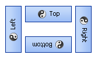
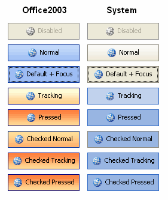
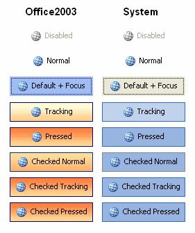

KryptonCheckButton
Use a KryptonCheckButton control when you need to present the user with a binary choice such as Yes/No or True/False. This control combines the toggle button functionality with the styling features of the Krypton Toolkit. The user can toggle between checked and unchecked states by pressing the button. Place code in the CheckedChanged event handler to perform actions based on the checked state. The content of the control is contained in the Values property. You can define Text, ExtraText and Image details within the Values property.
Appearance
Use the ButtonStyle property to define the top level styling required for the appearance of the KryptonCheckButton control. The default value of Standalone gives a solid appearance that should be appropriate for use in most circumstances. Alternatively you can use the LowProfile setting for situations where you need a transparent border and background. See figures 2 and 3 below for examples of the visual difference. A third button style ButtonSpec is used by default for button specifications that are placed inside KryptonHeader and KryptonHeaderGroup controls. Buttons that appear on the caption area of a KryptonForm use the Form style. There are also custom styles that can be defined via a KryptonPalette for situations where you need to create variations on the styles already provided. Custom styles are named simply Custom1, Custom2 and Custom3.
You can use the Orientation property to rotate the control. The default setting of Top shows the content in a left to right and top to bottom arrangement. Specify Bottom to have the control displayed upside down, Left to show the content rotated 90 degrees left and Right for 90 degrees rotated right. See figure 1 for examples.

Figure 1 – Orientation Property
Seven States
The button can be in one of seven possible states, Disabled, Normal, CheckedNormal, Tracking, CheckedTracking, Pressed and CheckedPressed. If the control has been disabled because the Enabled property is defined as False then the button will be in the Disabled state.
When enabled and unchecked the button will be in the Normal state until the user moves the mouse over the button at which point it enters the Tracking state. If the user presses the left mouse button whilst over the control then it enters the Pressed state. If the button is checked then the corresponding states would be CheckedNormal, CheckedTracking and CheckedPressed.
In order to customize the appearance of the control in each of the seven states you can use the properties StateDisabled, StateNormal, StateCheckedNormal, StateTracking, StateCheckedTracking, StatePressed and StateCheckedPressed. Each of these properties allows you to modify the background, border and content characteristics.
Common State
To speed up the customization process an extra StateCommon property has been provided. The settings from this are used if no override has been defined for the state specific entry. Note that the specific state values always take precedence and so if you define the border width in StateNormal and StateCommon then the StateNormal value will be used whenever the control is in the Normal state. Only if the StateNormal value is not overridden will it look in StateCommon.
Imagine the following scenario; you would like to define the border of the button to be 3 pixels wide with a rounding of 2 pixels and always red. Without the StateCommon property you would need to update the same three border settings in each of StateDisabled, StateNormal, StateCheckedNormal, StateTracking, StateCheckedTracking, StatePressed and StateCheckedPressed properties. Instead you can define the three border settings in just StateCommon and know they will be used whichever of the seven appearance states the button is using.
State Overrides
There are two additional properties called OverrideDefault and OverrideFocus that are involved in altering the appearance of the control. Notice that these start with the Override prefix instead of the usual State. This is because they do not relate to a specific control state such as Normal or Tracking. Instead they can be applied to any of the seven possible states and are used to override the appearance that would otherwise be shown.
Focus Override
If the control currently has the focus then the OverrideFocus settings are applied. This can occur when the control is in Normal, CheckedNormal, Tracking, CheckedTracking, Pressed or CheckedPressed states. By default the override only alters the appearance so that a focus rectangle is drawn around the content so that the user can see that the control currently has the focus.
Default Button Override
Each Form has the concept of a default button that is clicked when the user presses the Enter key. The KryptonCheckButton also supports the default button mechanism and OverrideDefault settings are applied to the appearance whenever the control has been designated as the default.
The following two images show the appearance of the KryptonCheckButton in the various different states for the two standard palettes of Professional - Office 2003 and Professional - System. Each of the seven states Disable, Normal, CheckedNormal, Tracking, CheckedTracking, Pressed and CheckedPressed, are shown with an additional example to show the OverrideDefault and OverrideFocus applied to the Normal state.
AllowUncheck Property
This property has a default value of True and so when in the checked state the user is allowed to click the button to cause a transition to the unchecked state. If you want to prevent the user from unchecking the button then just set AllowUncheck to False. This is useful if you have a group of related check buttons and want to ensure that at least one is checked at all times. In that scenario you would use this property to prevent the user from unchecking the button and so prevent the outcome where none of the grouped buttons are checked.
Examples of Appearance
Figure 2 shows the appearance when the default ButtonStyle of Standalone is used. You can see that all the different states are drawn as solid controls. The third button down shows how the default button and focus overrides have affected the appearance of the Normal state above it.

Figure 2 – ButtonStyle = Standalone
Figure 3 shows exactly the same states but this time the ButtonStyle is LowProfile. This time the background is transparent in the Disabled and Normal states. This button style is intended for use when you need to overlay a button onto a background and you want the button to be low profile and only light up when the user is interacting with it.

Figure 3 – ButtonStyle = LowProfile